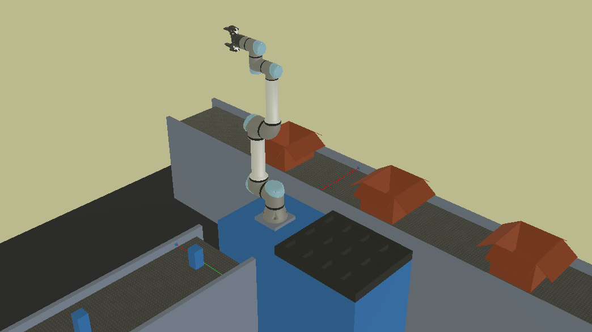

Pick and Place
El entorno de Pick and Place es un entorno que nos permite iniciarnos en el mundo de los manipuladores robóticos. A continuación se presenta una imagen del entorno.

Para abrirlo simplemente abriremos Webots y buscaremos el archivo desde Webots:
..\pick-and-place-UR5e\worlds\simulation.wbt
Al abrir el archivo se empezará a correr la simulación. IMPORTANTE tener el contenedor de URSIM corriendo.
Entradas y Salidas
Las entradas y salidas esta configuradas ya en el archivo de instalación pickAndPlace\pickAndPlace.installation y son las siguientes:
| I/O | Registro | Nombre | Descripción |
|---|---|---|---|
| entrada | GPbi[64] | infeed_laser | detector de objetos en la banda de entrada |
| entrada | GPbi[65] | outfeed_laser | detector de objetos en la banda de salida |
| salida | DO[0] | infeed_on | activación de banda de entrada, banda de piezas |
| salida | DO[1] | outfeed_on | activación de banda de salida, banda de cajas |
| salida | TO[0] | gripper | activación de la pinza, low para abrir, high para cerrar |
| salida | AO[0] | infeed_speed | control de la velocidad de la banda de entrada* |
| salida | AO[1] | outfeed_speed | control de la velocidad de la banda de salida* |
* puede ser controlada en voltaje 0-10V o en corriente 0-4mA.